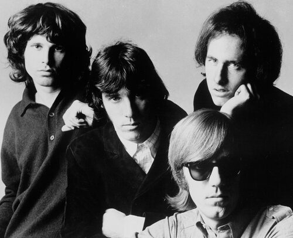
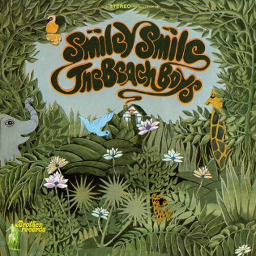
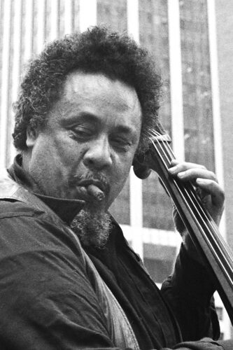
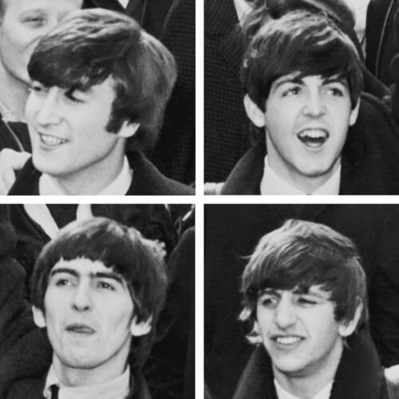

The Beatles write and finish Birthday in a single day
John Lennon, Paul McCartney, George Harrison, and Ringo Starr arrived at Abbey Road with only a basic 12-bar riff and wrote, recorded, and completed the raw rocker Birthday in one marathon session, breaking midway to watch the British TV premiere of the rock and roll film The Girl Can't Help It, as The Beatles Bible details.
They returned to Studio Two after midnight and cut backing vocals with Yoko Ono and Patti Harrison, turning a same-day sketch into one of the Beatles' heaviest White Album tracks.
September 18 at a Glance
| Year | Category | Event |
|---|---|---|
| 1968 | Industry | The Beatles write and finish Birthday in a single day |
| 1968 | Broadcast | The Doors tape a six-song set for Danish TV |
| 1967 | Release | The Beach Boys release Smiley Smile |
| 1967 | Release | The Who release I Can See for Miles in the US |
| 1966 | Broadcast | Corelli and Tebaldi sing on The Ed Sullivan Show |
| 1965 | Festival | Charles Mingus performs at Monterey Jazz Festival |
| 1964 | Concert | The Beatles play their only Dallas concert |
| 1963 | Culture | MLK's Birmingham eulogy later shapes Coltrane's Alabama |
| 1961 | Chart | Bobby Vee hits #1 with Take Good Care of My Baby |
The Beatles write and finish Birthday in a single day
John Lennon, Paul McCartney, George Harrison, and Ringo Starr arrived at Abbey Road with only a basic 12-bar riff and wrote, recorded, and completed the raw rocker Birthday in one marathon session, breaking midway to watch the British TV premiere of the rock and roll film The Girl Can't Help It, as The Beatles Bible details.
They returned to Studio Two after midnight and cut backing vocals with Yoko Ono and Patti Harrison, turning a same-day sketch into one of the Beatles' heaviest White Album tracks.
The Doors tape a tight six-song set for Danish TV
Just three days after Jim Morrison collapsed onstage in Amsterdam and was hospitalized, the Doors filmed a half-hour black-and-white performance at the Gladsaxe TV-Byen studios in Copenhagen for Danish television, running through six songs including Love Me Two Times and When the Music's Over, part of the era's psychedelic rock touring circuit.
Morrison's eyes stayed visibly dilated on camera, but the band delivered one of the most focused, tightly played sets ever caught on film during their turbulent 1968 European tour, per Wikipedia.

The six songs performed that morning, in order:
- Alabama Song (Whisky Bar)
- Back Door Man
- The WASP (Texas Radio and the Big Beat)
- Love Me Two Times
- When the Music's Over
- The Unknown Soldier
The Beach Boys release the stripped-down Smiley Smile
Brother/Capitol Records released garage and surf rock mainstays the Beach Boys' twelfth studio album, Smiley Smile, a deliberately lo-fi replacement for the shelved Smile project that traded Brian Wilson's orchestral Wall of Sound for home-recorded minimalism cut largely in his Bel Air house.
The album included the massive hit Good Vibrations but otherwise confounded fans expecting another Pet Sounds, peaking at just number 41 in the US even as it reached number 9 in the UK, per Wikipedia.

The Who release I Can See for Miles in the US
Decca released The Who's I Can See for Miles, backed with Mary Anne with the Shaky Hands, a Pete Townshend song he had held back for nearly a year because he considered it his best shot at a US hit.
Recorded in London and mixed in Los Angeles, the single became the band's highest-charting US single, reaching number 9 on the Billboard Hot 100 and pushing them toward heavier, more experimental rock, as Wikipedia notes.
Opera stars Corelli and Tebaldi sing on The Ed Sullivan Show
Italian tenor Franco Corelli and soprano Renata Tebaldi appeared live on CBS's The Ed Sullivan Show, performing Vicino a te from Umberto Giordano's opera Andrea Chenier for a mainstream American television audience.
The broadcast brought world-class opera into millions of living rooms alongside that week's jazz and easy listening pop acts, one of the more unlikely pairings Sullivan's variety format made possible.
Charles Mingus takes the stage at the Monterey Jazz Festival
Bassist and composer Charles Mingus performed at the Monterey Jazz Festival, though his time on stage was limited to under thirty minutes after the ambitious large-ensemble pieces he had written for the occasion ran into scheduling problems.
Mingus recorded that unheard material properly a week later at UCLA's Royce Hall, but the Monterey booking itself stood as a rare mid-1960s showcase for one of jazz and easy listening's most restless composers, per Wikipedia.

The Beatles play their only Dallas concert
The Beatles played the Dallas Memorial Auditorium to 10,000 fans during their first North American tour, a show delayed by a telephoned bomb threat that turned out to be a hoax, opening with Twist and Shout and closing with Long Tall Sally, as The Beatles Bible records.
It was the Beatles' only Dallas appearance, and every ticket had sold out within a day of going on sale.

MLK's eulogy for the Birmingham bombing victims later shapes Coltrane's Alabama
Dr. Martin Luther King Jr. delivered the eulogy at Sixth Avenue Baptist Church in Birmingham for three of the four girls killed in the 16th Street Baptist Church bombing, telling thousands of mourners not to become bitter in spite of the tragedy, as Wikipedia recounts.
John Coltrane later read King's published remarks and modeled the rise and fall of his tenor saxophone melody on the eulogy's cadence, recording the elegy Alabama that November.
Bobby Vee hits number one with Take Good Care of My Baby
Bobby Vee reached number one on the Billboard Hot 100 with Take Good Care of My Baby, a Gerry Goffin and Carole King song produced by Snuff Garrett, and held the spot for three weeks, as Wikipedia confirms.
It was Vee's only US number one, a high point of the smooth, orchestrated pop and Brill Building sound the Goffin-King team helped define.
Frequently Asked Questions
What happened in 1960s music on September 18?
September 18 produced nine verified music events across the decade, headlined by the Beatles writing and finishing Birthday in a single Abbey Road session in 1968.
The same day the Doors taped a tight set for Danish TV just three days after Jim Morrison's Amsterdam collapse, and the Beach Boys released their stripped-down Smiley Smile album.
How long did it take the Beatles to write and record Birthday?
The Beatles wrote and completed Birthday in one marathon session at Abbey Road on September 18, 1968, starting from just a basic 12-bar riff.
They broke midway through to watch the British TV premiere of the film The Girl Can't Help It before returning after midnight to finish vocals.
Did Jim Morrison's Amsterdam collapse affect the Doors' Copenhagen TV performance?
Morrison had collapsed onstage in Amsterdam on September 15, 1968, and was hospitalized, then rejoined the band just three days later for the Danish TV taping in Copenhagen on September 18.
Despite his still-dilated eyes, the band delivered a tight six-song set that is now considered one of their best-filmed performances.
Did the Beatles ever play a concert in Dallas?
Yes, the Beatles played their only Dallas concert at the Dallas Memorial Auditorium on September 18, 1964, during their first North American tour.
The show was briefly delayed by a phoned-in bomb threat that turned out to be a hoax.
When was Smiley Smile by the Beach Boys released?
Smiley Smile came out on September 18, 1967, as a stripped-down replacement for the shelved Smile project.
It reached number 41 in the US but performed better in the UK, climbing to number 9.
Is John Coltrane's Alabama based on a Martin Luther King speech?
Yes, Coltrane modeled the saxophone melody of Alabama on the cadence of Martin Luther King Jr.'s eulogy for three of the four girls killed in the 16th Street Baptist Church bombing, delivered September 18, 1963.
Coltrane recorded the piece that November, just two months after reading King's published remarks.